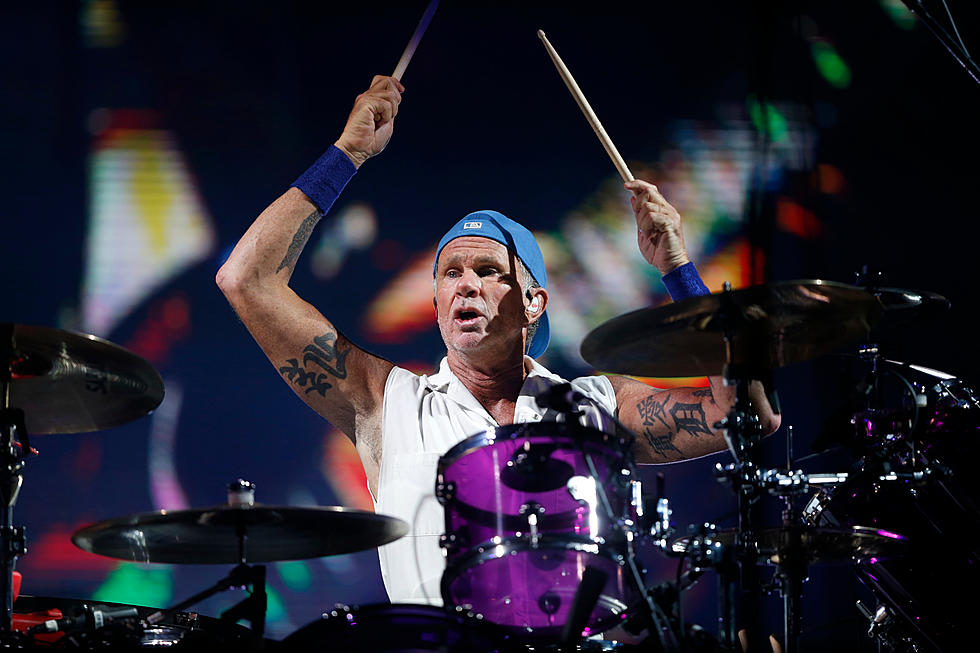

Integrantes
Nome completo: Anthony Kiedis
Data de Nascimento: 1 de novembro de 1962
Origem: Grand Rapids, Michigan
País: Estados Unidos
Gênero(s) Musicais: Funk rock, rock alternativo, punk rock, funk metal
Instrumento(s): Vocal, guitarra
Período em atividade: 1978 – presente
Gravadora(s): Warner Bros
Afiliação(ões): Red Hot Chili Peppers
Leia Mais
Nome completo: Michael Peter Balzary
Também conhecido(a) como: Flea
Nascimento: 16 de outubro de 1962
Origem: Melbourne
País: Austrália
Gênero(s) Musicais: Funk rock, rock alternativo, punk rock, experimental rock
Instrumento(s): baixo, trompete, piano, violoncelo, backing vocals
Modelos de instrumentos: Modulus Guitars
Período em atividade: 1978 - presente
Gravadora(s): Warner Bros., EMI
Afiliação(ões): Red Hot Chili Peppers, Atoms for Peace, Fear, Jane's Addiction, What Is This?, Dead Kennedys, The Mars Volta, Slash
Leia Mais

Nome completo: Chad Gaylord Smith
Nascimento: 25 de outubro de 1961
Local de nascimento: Saint Paul, Minnesota Estados Unidos
Gênero(s): Funk rock, rock alternativo, funk metal, hard rock, heavy metal, rock experimental, jazz-funk
Instrumento(s): Bateria, percussão
Modelos de instrumentos: Pearl Chad Smith Signature
Período em atividade: 1988-presente
Afiliação(ões): Red Hot Chili Peppers, Chickenfoot, Prestige Worldwide, Blue Öyster Cult,
Chad Smith's Bombastic Meatbats, Glenn Hughes, HSAS, The Process, Residente, Tom Morello, Dick Van Dyke, Joe Satriani
Leia Mais
Nome completo: John Anthony Frusciante
Também conhecido(a) como: Johnny Trickfinger
Nascimento: 5 de março de 1970 Nova Iorque, País: Estados Unidos
Gênero(s): Rock alternativo, Rock experimental, EletrônicaFunk, RockArt, Rock
Instrumento(s): Guitarra, Baixo, Sintetizador, Piano, Vocal
Modelos de instrumentos: Fender Stratocaster Fender Telecaster, Fender Jaguar, Gretsch White, Falcon Yamaha SG
Período em atividade: 1988 – atualmente
Afiliação(ões): Red Hot Chili Peppers, Ataxia, The Mars Volta, Omar Rodríguez-López, Venetian Snares, Swahili Blonde, Warpaint, Kimono Kult
Leia Mais
Ex-Integrantes
Feito por: Wendell Douglas